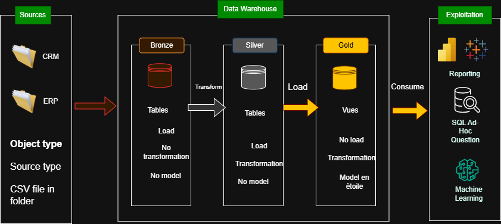
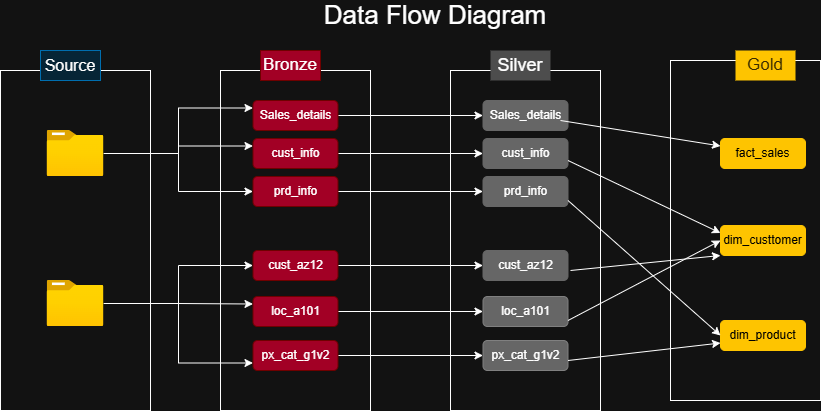

Problèmes de l'Entreprise
Les frictions décisionnelles et opérationnelles à l'origine du projet.
Finances
Rentabilité incertaine
L'entreprise enregistre des ventes… mais ne maîtrise pas réellement sa rentabilité. Impossible d'identifier les produits rentables vs déficitaires. Coûts incomplets, marge brute non fiable.
Données
Données fragmentées
Ventes, clients (multiples systèmes), produits, localisation, catégories — dispersées sans structure commune ni centralisation. Aucune vision globale fiable n'est possible.
Qualité
Incohérences critiques
Identifiants différents selon les sources, doublons, formats hétérogènes (préfixes, tirets), données manquantes. Une même réalité business interprétée différemment selon les équipes.
Clients
Vision client inexploitable
Impossible de savoir qui sont les meilleurs clients, où ils se trouvent, quels segments génèrent le plus de valeur. Campagnes marketing mal ciblées, gaspillage de budget.
Pilotage
Absence d'indicateurs fiables
Impossible de répondre : quels produits génèrent de la marge ? Où se situent les pertes ? Quels leviers améliorer en priorité ? Les décisions sont ralenties par manque de confiance.
Efficacité
Inefficacité opérationnelle
Les Data Analysts passent l'essentiel de leur temps sur le nettoyage manuel, la correction d'erreurs, la consolidation de fichiers. Jusqu'à 80% du temps perdu avant même d'analyser.
Synthèse Stratégique
L'entreprise ne manque pas de données.
Elle manque d'un système capable de transformer ces données en décisions fiables.
Medallion Architecture
Bronze · Silver · Gold — trois couches progressives de raffinement de la donnée.
6
Sources CSV
6
Tables Bronze
6
Tables Silver
3
Vues Gold
4
Scripts Python
10
Scripts SQL
Ingestion Brute
Couche Bronze
- Extract.py : Scan auto des *.csv, tout typé VARCHAR/TEXT.
- Idempotence : if_exists='replace' — pipeline rejouable à l'infini.
- Chemins dynamiques : pathlib.Path pour portabilité totale.
- 6 tables : cust_info, cust_az12, loc_a101, prd_info, px_cat_g1v2, sales_details.
Nettoyage & Data Quality
Couche Silver
- Transaction atomique : Rollback automatique sur échec psycopg2.
- SCD Type 2 : LEAD() pour historique des versions produits.
- Dédoublonnage : ROW_NUMBER() OVER(PARTITION BY cst_id).
- Cohérence comptable : ABS(), recalcul Sales = Qty × Price.
Modèle Décisionnel
Couche Gold
- Star Schema Kimball : dim_customer, dim_product, fact_sales.
- Vues SQL dynamiques : Power BI consulte toujours le plus récent.
- Fail-Fast : RuntimeError si vue corrompue — pipeline stoppé net.
- Zero NULL : COALESCE() systématique sur toutes les colonnes BI.

Pipeline de Données
Architecture complète — extraction, modélisation, orchestration, audit.
Principes d'ingénierie logicielle
Idempotence totale
DROP TABLE/VIEW IF EXISTS + recréation complète. Pipeline rejouable N fois sans corruption.
Transaction atomique
Tout le pipeline Silver tourne dans une transaction unique. Échec → ROLLBACK instantané.
Fail-Fast Gold
Si une vue dimensionnelle échoue → RuntimeError stoppe immédiatement le pipeline.
Zéro NULL en Gold
COALESCE() systématique sur toutes les colonnes de filtrage pour Power BI.
Sécurité credentials
Chaîne de connexion lue via os.getenv('DATABASE_URL') — aucun mot de passe dans le code.
Chemins dynamiques
pathlib.Path(__file__).resolve() — aucun chemin en dur, projet 100% portable.
03.1 / Transformations Silver
Data Quality — Règles appliquées
| # Règle | Table ciblée | Transformation | Implémentation SQL |
|---|---|---|---|
| 01 | cust_info | Dédoublonnage clients | ROW_NUMBER() OVER(PARTITION BY cst_id ORDER BY date DESC) |
| 02 | cust_info | Mapping genre/statut marital | CASE WHEN M→'Male', F→'Female', ELSE 'n/a' |
| 03 | cust_az12 | Nettoyage préfixe NAS | SUBSTRING(cid FROM 4) WHERE cid LIKE 'NAS%' |
| 04 | loc_a101 | Normalisation des pays | US/USA/UNITED STATES → 'United States' |
| 05 | loc_a101 | Suppression espaces insécables | REPLACE(cntry, chr(160), '') |
| 06 | prd_info | SCD Type 2 versions produits | LEAD(prd_start_dt,1,'9999-12-31') OVER(PARTITION BY prd_key) |
| 07 | sales_details | Cohérence comptable | IF sls_sales=0: Qty×Price / IF price=0: Sales/Qty |
| 08 | sales_details | Élimination des négatifs | ABS(sls_sales), ABS(sls_quantity), ABS(sls_price) |
| 09 | Toutes tables | Sécurisation des dates | Validation longueur 8/10 avant TO_DATE — pivot 1900-01-01 |
| 10 | Toutes tables | Nettoyage espaces parasites | TRIM() systématique sur toutes colonnes texte |
03.2 / Modèle Gold
Star Schema — Kimball
dim_customer
PK: customer_id BIGINT
customer_key VARCHAR
customer_number VARCHAR
first_name / last_name
gender ← fallback cross-source
marital_status
country
birth_date DATE
create_date DATE
fact_sales ⭐
sale_id VARCHAR
FK: product_key BIGINT
FK: customer_key BIGINT
order_date DATE
ship_date DATE
due_date DATE
sale_amount NUMERIC
quantity NUMERIC
price NUMERIC
dim_product
PK: product_key BIGINT
product_id INTEGER
product_number VARCHAR
product_name VARCHAR
category / sub_category
maintenance VARCHAR
cost NUMERIC
product_line VARCHAR
start_date DATE
03.3 / Orchestration
Orchestrateur.py
Bronze — Extract.py
pipeline_vers_bronze() · Arrêt sur échec
Silver — Transform.py
run_silver_pipeline() · Rollback auto psycopg2
Gold — Load.py
executer_generation_gold() · Fail-Fast RuntimeError
$ python Orchestrateur.py
03.4 / Gouvernance
Schéma d'Audit
| Colonne | Type | Rôle |
|---|---|---|
| log_id | SERIAL PK | Identifiant auto |
| script_name | VARCHAR | Fichier exécuté |
| source/target_layer | VARCHAR | Bronze→Silver… |
| duration_seconds | NUMERIC | Performance |
| rows_inserted | INT | Volumétrie |
| status | VARCHAR | SUCCESS/FAILED |
| error_message | TEXT | Debug complet |

Impacts Business
Un pilotage basé sur des faits, pas sur des intuitions.
Pour les dirigeants
Décision basée sur les faits
Visibilité sur la rentabilité réelle
- Marge brute par produit mesurable
- Rentabilité réelle de chaque vente
- Quoi développer, optimiser, arrêter
Performance dans le temps
- Trace fiable des évolutions de prix
- Impact des décisions passées visible
- Analyse des promotions et stratégies tarifaires
Vision client unifiée
- Clients les plus rentables identifiés
- Segmentation efficace de la clientèle
- Campagnes marketing ciblées
Pour les Data Analysts
Du rôle technique au rôle stratégique
Recentrage sur l'analyse
- Tâches répétitives automatisées
- Plus de temps pour comprendre le business
- Proposer des actions concrètes
Rapports fiables & alignés
- Un seul référentiel commun
- Chiffres identiques pour toutes les équipes
- Disparition des contradictions en réunion
Décision rapide et fluide
- Dashboards rapides et exploitables
- Réponses immédiates aux questions business
- Capacité à réagir en temps réel
Pour l'entreprise
Transformation structurelle et durable
Fiabilité & sécurité
Accès sécurisé, données protégées, gestion maîtrisée des informations sensibles. Réduction des risques opérationnels.
Continuité des analyses
Aucun risque de données partielles. Système cohérent en permanence. Décisions toujours sur des données fiables.
Réduction des coûts cachés
Moins de temps perdu, moins d'erreurs humaines, moins de retraitements. Amélioration directe de l'efficacité opérationnelle.
Synthèse Stratégique
L'entreprise ne subit plus ses données.
Elle les utilise pour piloter.
Ce projet ne change pas seulement la manière de traiter la data.
Il change la manière de piloter l'entreprise.
Modernisation du Pilotage
Transformation de la performance et de la rentabilité — vue d'ensemble stratégique.
Transformer des données dispersées
en un outil de décision fiable
Centraliser
Toutes les sources en un seul endroit
Structurer
Star Schema optimisé pour BI
Fiabiliser
9 règles de Data Quality appliquées
❌ Situation initiale
Pilotage financier incertain
Marge réelle inconnue — décisions basées sur le CA seul
Absence de vision dans le temps
Aucune traçabilité des évolutions de prix ni des tendances
Vision client fragmentée
Données réparties sur plusieurs sources contradictoires
Inefficacité des équipes data
80% du temps en nettoyage manuel — peu d'analyse produite
Manque de confiance dans les données
Rapports incohérents — chiffres contestés entre services
✅ Transformation apportée
Pilotage réel de la rentabilité
Calcul fiable des marges — produits rentables vs non rentables
SCD Type 2 — historique complet
Évolutions de prix tracées, promotions analysables, tendances lisibles
Vision client unifiée et exploitable
dim_customer — segmentation fiable, profils à forte valeur identifiés
Revalorisation du rôle Analyst
Pipeline automatisé — analystes recentrés sur la valeur business
Fiabilité & robustesse du système
Idempotence totale, transactions atomiques, audit complet
Conclusion Stratégique
Ce projet ne répond pas seulement à un besoin technique.
Il transforme la manière de gérer, décider et faire croître l'entreprise.
3
Couches
Medallion
10
Règles
Data Quality
1
Commande
pipeline
∞
Rejeux
idempotents